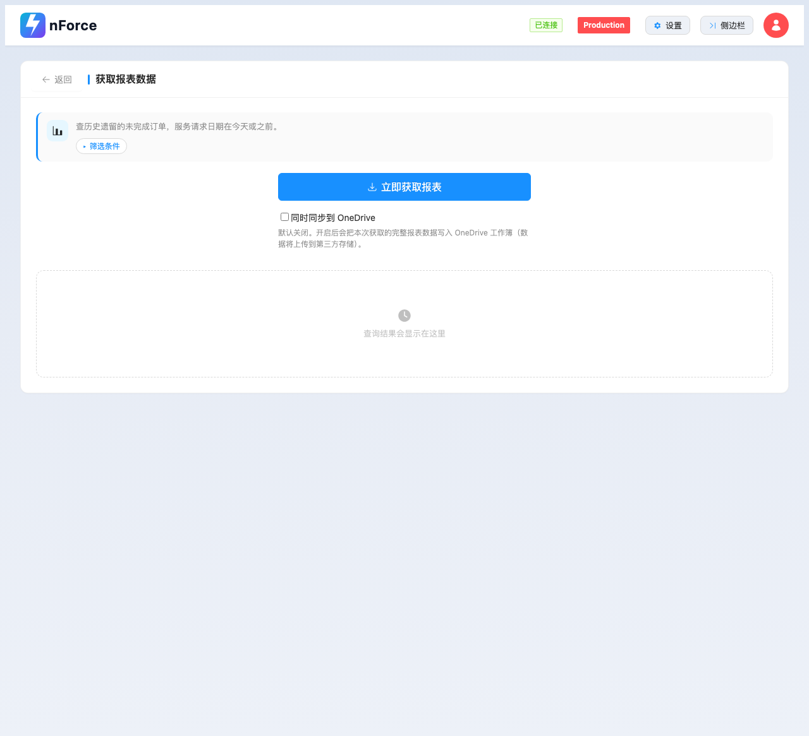
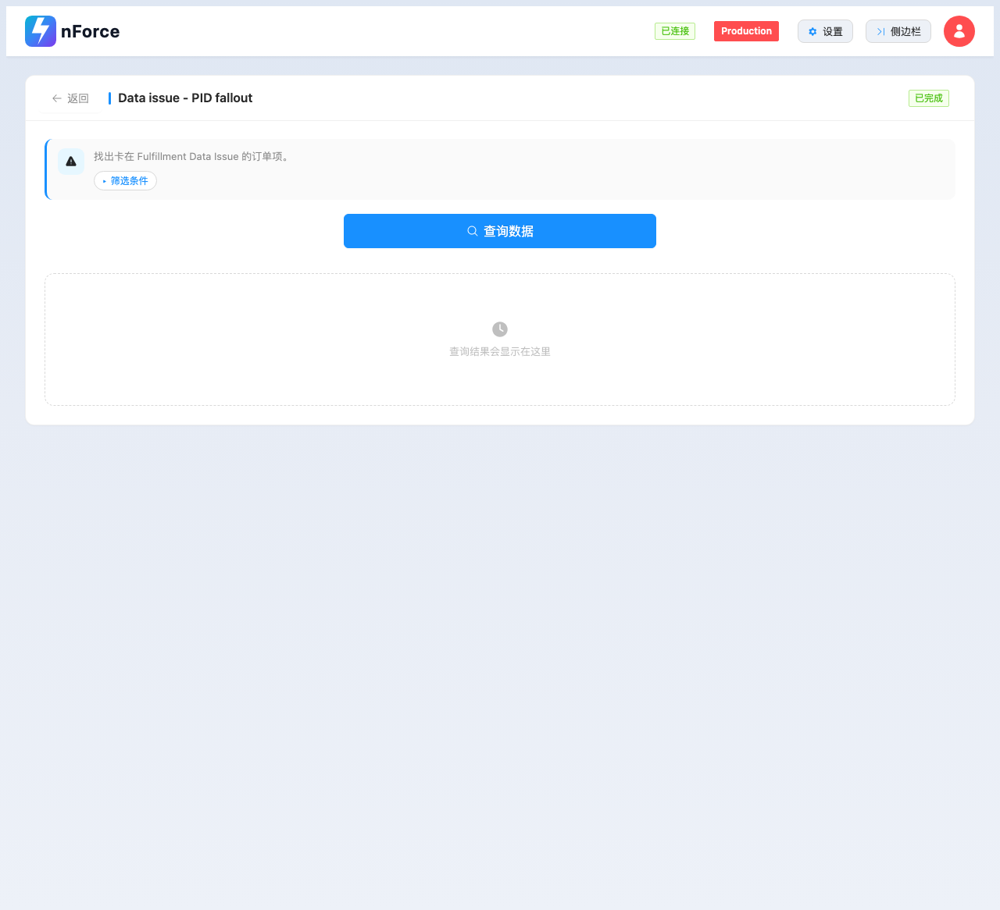
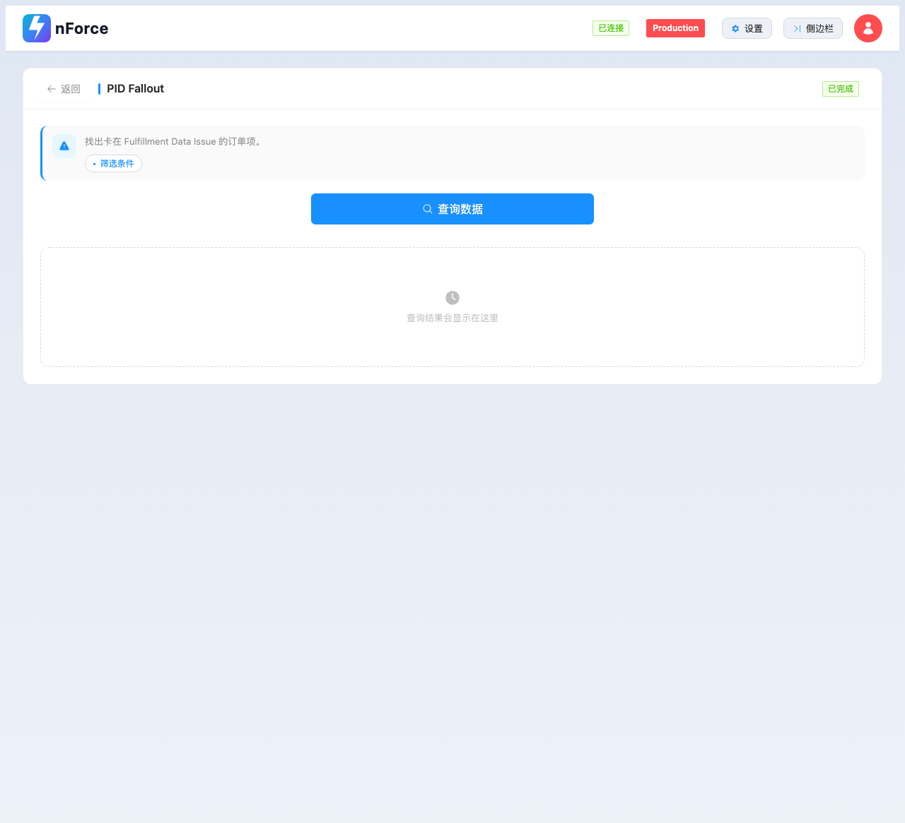
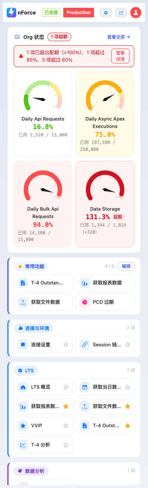
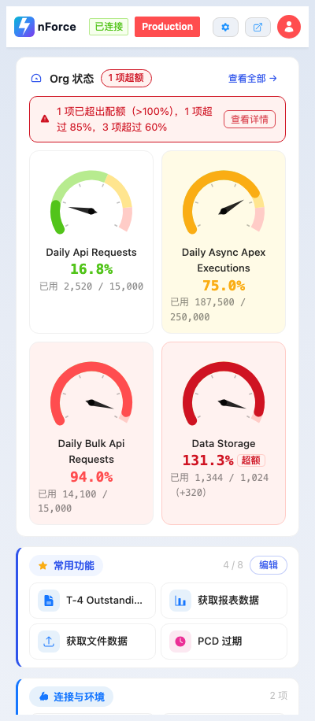

nForce Tools v4.4.0 · 2026-10-13 · 针对「模块间不统一 / 说明占地方 / 按钮形状不统一 / 页面单调 / AI 味」五项
第 1–6 节按 29 个功能页横向对比量；第 7 节按 400 / 560 / 1280 三档宽度纵向量
第一轮评审报告（同目录 index.html）给的是问题清单；这一轮是**照着清单改**。
改完用 CDP 把 **29 个功能页全量量了一遍**（不靠肉眼抽看截图），所有结论都有具体数字。
唯一需要你拍板的是一处命名方向调整，标在「待确认」里。
原来每个功能页开头是「80px 居中圆图标 + 居中 24px 大标题 + 居中说明列表」， 一屏里出现三个标题级元素。最长的 section-17 有 224 字 / 5 条，正文被挤到折叠线以下。
改成一条横向信息带：跟模块色的小方章 + 一句话摘要；「字段口径 / 筛选条件」这类
不常看但出错时要查的内容收进默认折叠的 <details>。
标题不再重复写第二遍——卡片头已经是本页标题。

连接设置页（未连接时的落地页）是内联说明最密的一页，除了加信息带，还把两段 「点击"测试连接"按钮以验证Salesforce连接」这类说明书腔的文案删掉/收进折叠：
全量量完 71 个可见按钮，高度分布从五种收到三档；剩下的 72px 是设置页的行式按钮（.settings-row，不是操作按钮，本来就该是另一个尺寸）。
| 指标 | 改前 | 改后 |
|---|---|---|
| 按钮高度档位 | 24 / 32 / 40 / 48 / 50px（5 种） | 30 / 36 / 44px（3 档） |
| 圆角 | 2px 与 6px 并存 | 统一 6px（--radius-md） |
| 就地改色 | 22 种 class 组合，u-bg-indigo/u-bg-success 混用 | 主操作取模块色 / 次操作白底描边 |
项目没有全局 box-sizing: border-box。<button> 靠浏览器 UA 样式拿到 border-box，
但 <label class="ant-btn"> 形式的按钮（LTS 的「更新概览」包着 file input）没有——
同一档按钮会高出 2px：
.ant-btn {
box-sizing: border-box; /* ← 补上这行 */
height: 36px;
...
}-sm 一致）
11 个结果表初始带 u-hidden，空页面只剩「说明 + 一个按钮 + 一大片空白」——
这是「页面单调」的根因。给每个结果区加了虚线描边的占位块，表格渲染出来后自动让位（纯 CSS，
:has() 相邻兄弟选择器，不引 JS）。


display:flex → 表格出现后 none → 收起后回到 flex，双向联动正常，控制台零错误。
实现上有个坑：table_utils.js 原来只写内联 style.display，:has() 判不出来，
所以补了 showContainer()/hideContainer() 同时切 u-hidden 类。
这一条是量出来的，不是看出来的——所有页面头部图标坐在彩色底章上，但字形本身是
rgba(0,0,0,0.85)。根因：common/icons.js 用
el.outerHTML = <svg class="svg-icon"> 整体替换 <i>，
<i> 上的 class 一个都不保留，所以 u-text-brand 连同
u-fs-3xl 之类的尺寸类一起消失，颜色退回继承值。
把颜色与底色收到容器上（子 svg 靠 fill="currentColor" 继承）：
.section-icon {
background: var(--theme-bg, var(--primary-bg));
color: var(--theme-color, var(--primary-color));
}| 页面 | 模块 | 图标 fill（改后实测） |
|---|---|---|
| 连接设置（无模块） | — | rgb(24,144,255) 蓝 ← 兜底生效 |
| 获取报表数据 | LTS / PCD | rgb(24,144,255) |
| VVIP | VVIP | rgb(250,173,20) 琥珀 |
| 中午食乜 | Lunch | rgb(235,47,150) 粉 |
| Bulk / SOQL / Metadata | Tools | rgb(47,84,235) 靛 |
| Schedule Jobs | Schedule | rgb(82,196,26) 绿 |
29 个功能页里有 12 个的卡片标题和用户点的磁贴标签对不上。这类不一致不会报错， 所以一直没人发现，但用户点「A」进去看到「B」，第一反应是「我是不是点错了」。
| step | 磁贴标签（用户先看到的） | 原卡片标题 |
|---|---|---|
| 4 | 获取文件数据 | 根据上传文件获取数据 |
| 5 | LTS 概览 | LTS 模块 |
| 7 | OTT | OTT 模块 |
| 8 | PCD | PCD 模块 |
| 11 | CVP7 | CVP7 模块 |
| 12 | T-4 Outstanding | Outstanding T-4 connectivity |
| 13 | T-4 分析 | T-4 Outstanding分析 ← 中英拼在一起，连空格都没有 |
| 16 | PID Fallout | Data issue - PID fallout |
| 17 | QC Issue | Data issue - QC issue |
| 23 | SOQL 导出 | SOQL 数据导出 |
| 24 | 批量导入 | 批量数据导入 |
| 29 | PCD 过期 | 获取 PCD 过期数据 |
一律以磁贴标签为准改卡片标题——那是用户已经先看到、先记住的名字， 而且窄侧边栏里短标签更好排。另外「PCD 过期」「获取 PCD 过期数据」这类长名在 日志 / 注释里还有 15 处引用（那些是诊断文案，没动）。
index.html 的卡片标题写「中午吃乜」。
我按多数派把卡片标题统一成「中午食乜」。如果「吃乜」才是你要的，说一声，我反向统一那 4 处。
tools/check-ui.mjs 新增 P 组：磁贴标签与卡片标题必须同名。
实测注入一处错名会立刻报出所在行和两种改法，改回后归零。
! [P. 磁贴标签↔卡片标题] 点「SOQL 导出」进去，页面标题写的是「故意写错的名字」
src/index.html:1661 <div class="ant-card-head-title"> 改成「SOQL 导出」
（或反过来把 src/rules/ui_layout.json 里磁贴的 label 改成「故意写错的名字」——两处必须同名）| 问题 | 处理 |
|---|---|
Org Dashboard「上次刷新」显示 10/13/2026, 12:21:56 PM（月/日/年倒序 + 英文 AP/PM） |
新增 utils.formatDateTime()（dayjs 优先，退回显式 zh-CN + 24 小时制），
org_limits.js ×2、inspector_tools.js、session_info.js 统一走它 |
main.css 里两份按钮定义并存（旧的 .ant-btn-lg { height:40px; border-radius:2px } 已被完全覆盖） |
删掉旧块 + 那段写着「兜底」实则会把内容静默隐藏的
.section-header .section-title { display: none } |
图标底章的 u-bg-theme 在无模块页面上解析成透明 |
收进 .section-icon，21 处 HTML 工具类去掉 |
登录页 / 弹窗按钮 50px + translateY(-2px) 与主应用手感不一致 |
统一到 44px、--radius-md、只变色不上浮 |
上面几节都是「29 页横向对比」量出来的。这一节是换个方向——同一页在 400 / 560 / 1280 三档宽度下量，专抓那些「只有某个宽度才露头」的问题。 三处都有具体数字，其中两处是同一类根因：0 宽度的元素和没用的预留，照样吃布局。
首页 Org 状态卡的告警文案（「1 项已超出配额（>100%），1 项超过 85%，3 项超过 60%」） 是个匿名文本节点，跟「查看详情」按钮同处一个 flex 行。文案一长，按钮先被压扁：
400px：48 × 40px ← 两行，「查看详情」竖排
1280px：66 × 23px ← 一行.org-dash-alert-link {
flex-shrink: 0; /* ← 补 */
white-space: nowrap; /* ← 补 */
}改后 400px 也是 66 × 23 单行（文案自己换行，按钮不再变形）。
这个更有意思：量出来「标签可用 73px，而 6 个汉字需要 78px」——就差 5px，于是「获取当日数据」这类全被截断。顺藤摸瓜找到两个根因。
根因一：空的锁图标容器白吃一个 gap。
.tile-lock-wrap 始终在 DOM 里（未锁定时只把里面的 svg 藏起来），
但它是 .tile 的第三个 flex 子项——宽度 0，照样占掉一个 8px 的 gap：
.tile-lock-wrap {
position: absolute; /* ← 移出常规流，宽度还给 .tile-text */
top: 0; right: 0; width: 0; height: 0;
}根因二：星标预留有三套值。
星标是绝对定位的圆形按钮（right: 9px; width: 22px），
得靠父级 padding-right 让位。而同一个零件写了三个数：
基础 36px、≤560px 覆盖成 28px、
常用功能区又单独 14px。三个数都不是按「星标实际多大」算的。
查 DOM 才发现关键事实：常用功能区那 4 张磁贴根本没有星标（编辑态换成底部的 ← → ×），
所以 14px 那条不是随手写的，但它用的是「猜网格」而不是「看有没有星标」。改用 :has()：
.tile-cell > .tile { padding-right: 14px; } /* 默认：没有星标 */
.tile-cell:has(> .tile-fav-btn) > .tile { /* 有星标才预留 */
padding-right: 30px; /* 6px 偏移 + 22px 按钮 + 2px */
}| 宽度 | 标签被截断的磁贴 | 标签可用宽 |
|---|---|---|
| 400px（2 列） | 13 / 28 → 5 / 28 | 73px → 79px（常用功能区 87 → 95px） |
| 560px（3 列） | 5 / 28 | → 78px |
| 1280px（6 列） | 4 / 28 → 2 / 28 | 84px → 100px |
剩下 5 个是 T-4 Outstanding（102px）、Execute Anonymous（126px）这类
本身就更长的名字，2 列 157px 的磁贴确实放不下——再挤就要动图标尺寸和星标热区了，不划算。
获取当日数…）

.tile-grid 的 minmax() 与 gap，
所以 panel-shot.mjs 里 data-tile-cols 的三处期望值（560→3 / 400→2 / 1280→6）不需要同步。
改完实测仍是 2 / 3 / 6。
这 6 个页面没有加信息带，因为它们本来就不是「功能页」：
.pref-group 自成一套结构）.layout-panel-tip 说明块）、Session 链接（已有安全警告条，再加一条会变成三层堆叠）| 检查 | 结果 |
|---|---|
npm run check:ui（A–P 组） | ERROR 0 · WARN 0 |
npx jest | 157 passed / 5 suites（与基线一致） |
| 截图套件 10 场景（panel / tab × 400 / 1280） | 横向溢出 0 · 画布未跟随 0 · 停错 section 0 · 期望不符 0 |
| 空状态双向联动（真实取数流程） | flex → none → flex，控制台零错误 |
| 29 个页面全量量测（按钮档位 / 头部 / 图标色） | 见上文各表 |
| 三档宽度排版量测 400 / 560 / 1280（磁贴截断 / 告警按钮 / 列数） | 截断 13→5、8→8、4→2；按钮恒为单行；列数 2/3/6 未变 |
npm run build → dist | 构建成功，dist 与 src 同步 |
截图：round2/before/ 与 round2/after/（各 8 张，同 case 同尺寸）。
量测脚本：/tmp/nforce-verify/audit-ui.mjs（全量）、probe-icon.mjs（图标色）。